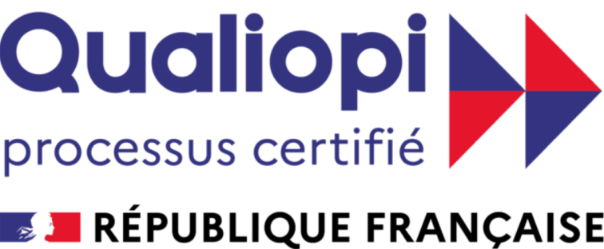

01 · Formations
Nos formations, certifiées Qualiopi.
Quatre parcours individualisés de 4 à 10 h, qui mêlent coaching et formation. Tout tient sur une page : pas besoin de filtre.
02Le catalogue
Les quatre formations.
03Modalités & délais d’accès
Comment ça se passe.
- Durée
- Parcours de 4 h, 6 h, 8 h ou 10 h
- Sessions
- Sessions individuelles de 1 h
- Format
- Présentiel à Paris (Opéra) ou distanciel
- Public
- Dirigeants, Middle & top management, Seniors, Juniors
- Prérequis
- Aucun — entretien de positionnement en amont
- Délais d’accès
- Démarrage sous 2 à 4 semaines après validation du devis ou accord de prise en charge.
04Financement
Finançable par votre OPCO.
Nos formations s’inscrivent dans le plan de développement des compétences de votre entreprise. Nous vous accompagnons dans le montage du dossier.
- 01
Premier échange
Votre besoin, votre contexte, le parcours adapté.
- 02
Devis & programme
Envoyés sous 48 h, prêts à être transmis à votre OPCO.
- 03
Accord de prise en charge
Votre OPCO valide le financement — nous répondons à ses questions.
- 04
Démarrage
Sous 2 à 4 semaines après accord.
05Indicateurs de résultats
Mesurés, publiés, tenus.
- Note Google
- 4,9/5
- Satisfaction 2025
- 94 %
- Cas d’usage
- 15
+85 avis
sur nos formations
à trois échelles
06Accessibilité & handicap
Une formation adaptée à chacun.
Nos formations sont accessibles aux personnes en situation de handicap. Contactez notre référente handicap pour étudier ensemble les adaptations nécessaires (rythme, format, supports).
Référente handicap : Ilana Porteret — coaching@scoache.com · +33 1 77 75 96 37
07Certificat Qualiopi

Certifié Qualiopi
La certification qualité a été délivrée au titre des actions de formation et des bilans de compétences. Nos formations sont finançables par votre OPCO.
Consulter le certificat (PDF)Nous contacter